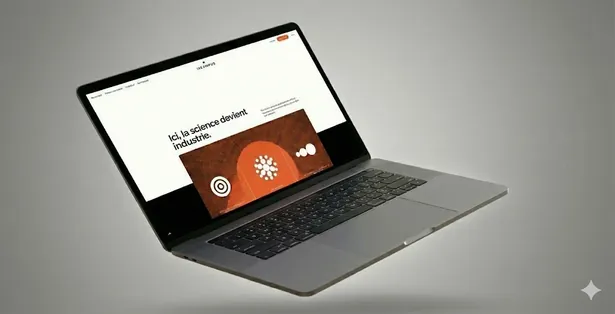
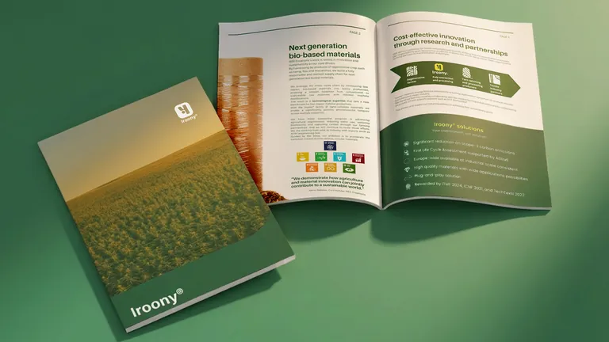
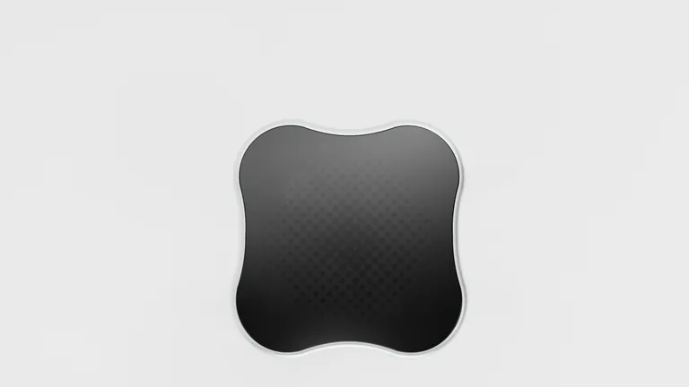
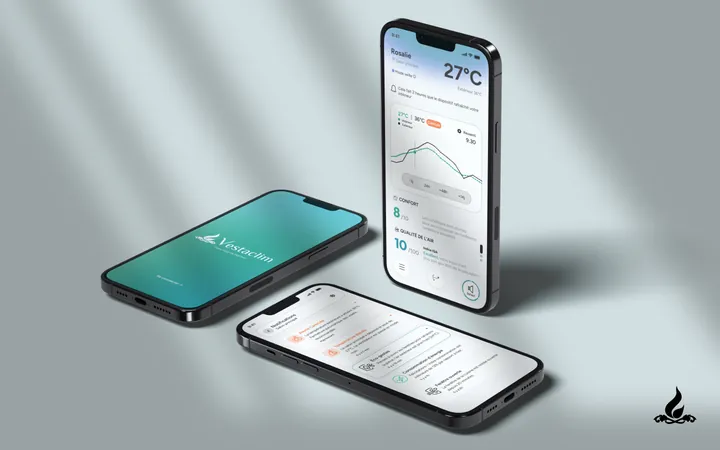

À propos
ThéoPetitimbert
- Product designer
- UX/UI designer
- Global designer

Designer global, je transforme des sujets complexes en produits, services et expériences utiles, compréhensibles et désirables.
Au Design Studio d’iXcampus, j’ai accompagné des projets deeptech de la recherche utilisateur au prototypage. J’utilise l’IA comme un matériau de conception et je conçois mes propres outils.
J’aime le design avec toutes les disciplines qui se cachent derrière, c’est pourquoi j’ai choisi le design global : considérer une situation dans son ensemble et sa complexité, et parmi toutes les formes de design trouver celle qui répondra réellement aux besoins.
Expérience
- 2024 → 2026Alternance · Design Studio, iXcampusCréation du design studio et accompagnement de startups deeptech. TrembLess · VestaClim · Iroony · PiPop et autres.
- Juin → juil. 2023Stage · SNCF RéseauErgonomie, design & SHS.
Formation
- 2021 → 2026CY école de design · Master 2 Design GlobalSaint-Germain-en-Laye · plus de 16 projets partenaires.
- 2024 · semestreErasmus · HOWEST, BelgiqueDesign for Identity · design industriel · technologie.
- 2021Baccalauréat généralNumérique et sciences informatiques · Humanités, Littérature et Philosophie · Mathématiques.
Compétences
Savoir-faire
- Design produit
- UX/UI · design d’interface
- Conception stratégique
- Prototypage rapide
- Recherche utilisateur
- Animation de workshops
Outils
- Figma · Sketch · Suite Adobe
- Rhino 8 · Twinmotion · Vizcom
- Claude Code · GitHub · outils IA
Centres d’intérêt
- Cinéma · voyages
- Culture nipponne · jeu de go
- Hockey sur glace · nature
- Informatique
Expérience · 2024 → 2026
Design Studio
iXcampus, en alternance
Offre portée par l’incubateur d’iXcampus, j’ai participé à la construction du design studio, qui a pour objectif l’accompagnement des startups deeptech. Des structures qui peuvent changer d’orientation d’un jour à l’autre : un cadre de travail instable, auquel la méthode s’adapte.
- 01
Échange
Comprendre le projet avec les fondateurs.
- 02
Analyse
Identifier les points faibles.
- 03
Bilan régulier
Restituer un diagnostic argumenté.
- 04
Solutions
Concevoir, maquetter, prototyper.




- Missions
- TrembLess · Site web iXcampus · Étude à Lannion · VestaClim · PiPop
- Livrables
- PDF de restitution, maquettes digitales, prototypes basse fidélité